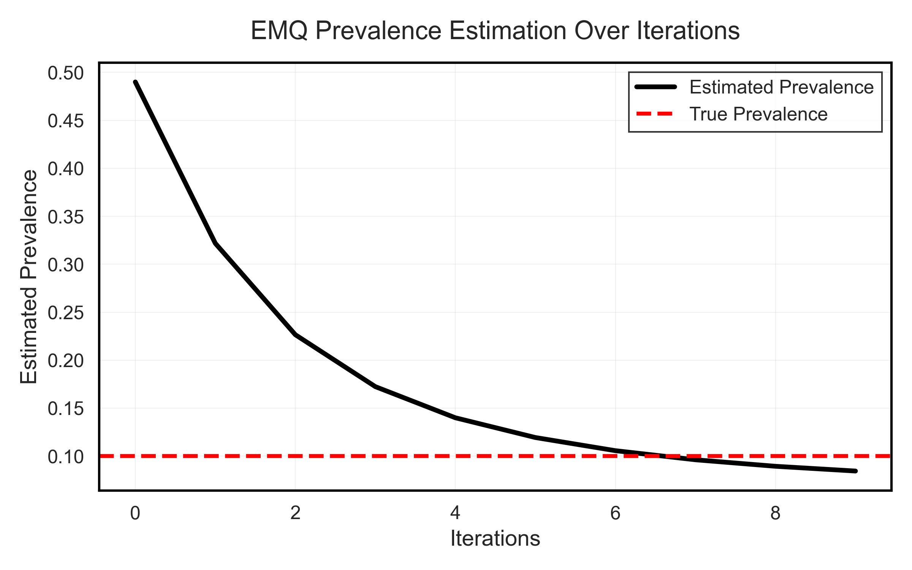

1.5. Likelihood-Based Quantification#
Likelihood-based methods (Maximum Likelihood) aim to estimate class prevalences in the test set \(U\), assuming that the class distribution (priors) has changed, but the probability densities within each class (\(P(X|Y)\)) have remained the same (Prior Probability Shift).
1.5.1. Maximum Likelihood Prevalence Estimation (MLPE)#
The Maximum Likelihood Prevalence Estimation (MLPE), defined in MLPE, is the simplest strategy and is considered a trivial starting point or baseline. It naively assumes that the class distribution in the test set (\(U\)) is the same as in the training set (\(L\)).
MLPE is not a “true” quantification method but rather a trivial strategy. It simply takes the observed prevalence in the training set and uses it as the estimate for the test set. If there were no dataset shift (change in distribution), MLPE would be the optimal quantification strategy.
1.5.2. Expectation Maximization for Quantification (EMQ)#
The Expectation Maximization for Quantification (EMQ), defined in EMQ (also known as SLD — Saerens, Latinne, Decaestecker) [1], is an transductive algorithm that uses a transductive correction of posterior probabilities to estimate class prevalences in the test set \(U\) by maximizing the likelihood of the observed data [2].
The SLD algorithm is based on the Expectation-Maximization (EM) framework, which is an iterative method for finding maximum likelihood estimates in models with latent variables. The EMQ works by:
Adjusting classifier outputs: It adjusts the outputs of a probabilistic classifier to correspond to new prior probabilities (prevalences) without the need to retrain the classification model. As a byproduct of this process, it also estimates the new prior probabilities.
Iterative refinement: EMQ is a mutually recursive process that iterates by incrementally updating posterior probabilities (E-Step) and then class prevalences (M-Step) until the process converges.
Convergence guarantee: The algorithm converges to a global maximum of the likelihood estimate, as the likelihood function is concave and bounded.
{kind=link}

Expectation Maximization Illustration for a binary scenario (looking only at the positive class)#
The method starts at Iteration 0, where the initial estimated prevalence \(\hat{p}^{(0)}_U(y)\) is defined as the training set prevalence \(p_L(y)\) (i.e., the MLPE estimate, or priors). From there, EMQ uses iteration to adjust this initial estimate.
Mathematical details - EMQ Algorithm
EMQ iterates between the E and M steps, based on:
\(\hat{p}^{(s)}_U(\omega_i)\): Estimated prevalence of class \(\omega_i\) at iteration \(s\).
\(\hat{p}_L(\omega_i)\): Prior probability of class \(\omega_i\) in the source domain (training).
\(\hat{p}_L(\omega_i \mid x_k)\): Posterior probability of \(x_k\) belonging to class \(\omega_i\), provided by the calibrated classifier.
Initialization (Iteration s=0)
For each class \(y \in Y\):
E-Step (Expectation) - Posterior Probability Correction
Calculates the corrected posterior probability, \(p^{(s)}(\omega_i \mid x_k)\). This step adjusts the classifier output probabilities using the ratio between the new estimated prevalence and the training prevalence:
M-Step (Maximization) - Prevalence Update
The new prevalence estimate (\(\hat{p}^{(s)}_U(\omega_i)\)) is the average of the corrected posterior probabilities over all \(N\) samples in the test set \(U\):
The EMQ iterates the E and M steps until the prevalence parameters converge [1] [2].
Example
from mlquantify.likelihood import EMQ
from sklearn.linear_model import LogisticRegression
# EMQ requires a probabilistic classifier (soft classifier)
q = EMQ(estimator=LogisticRegression())
q.fit(X_train, y_train)
# Updates predictions based on the test distribution iteratively
q.predict(X_test)
# -> adjusted prevalence dictionary